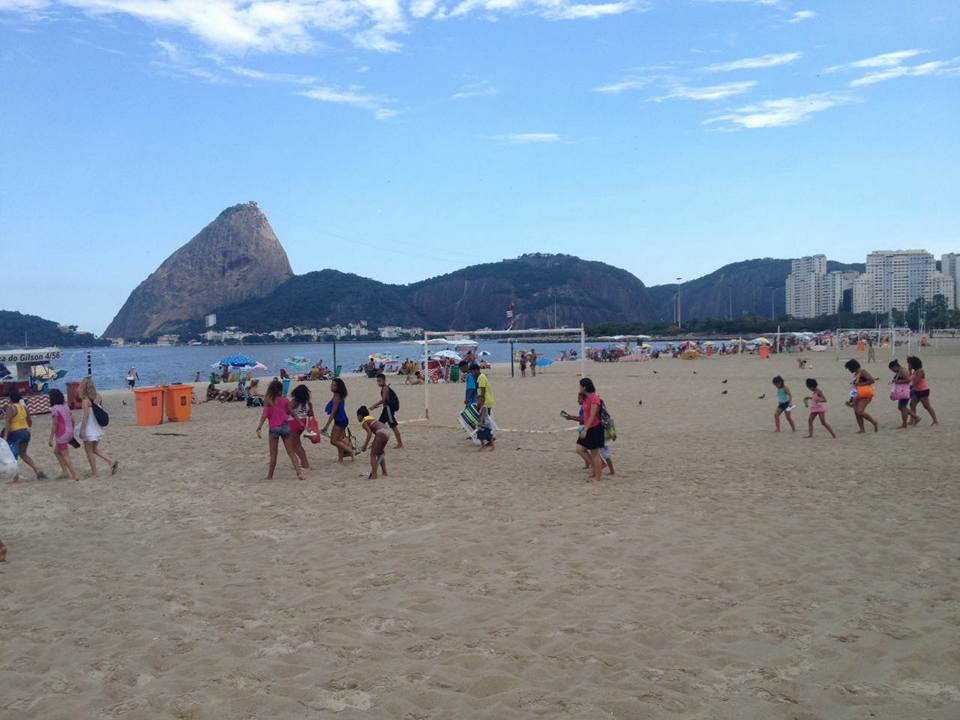

O Grupo PROA (Prevenção Realizada com Organização e Amor) iniciou suas atividades em abril de 1998, na Comunidade do Morro dos Prazeres, no bairro de Santa Teresa, Rio de Janeiro, quando um grupo de amigos decidiu convencer os moradores da importância de se protegerem contra doenças sexualmente transmissíveis (DSTs). Munidos de um caderno com fotos e informações sobre DSTs, começaram a distribuir preservativos e a realizar um trabalho de conscientização e educação sexual. O PROA estabeleceu uma parceria - que se fortalece a cada ano - com a Unidade de Saúde local a fim de difundir informações sobre seus programas sanitários.
Com mais de 18 anos de muito trabalho, o grupo segue inovando na busca de temas para os encontros, nas formas de aconselhamento e capacitação, além da participação em movimentos sociais a fim de fortalecer as parecerias para melhorar a vida dos moradores da comunidade.


Café comunitário
Uma forma atraente e prazerosa de unir pessoas para discutir temas importantes sobre o desenvolvimento do território onde vivem. É um convite e uma oportunidade de gerar empatia e o desejo de participar das ações em benefício da comunidade.

Encontros de sensibilização
São encontros acolhedores com grupos de homens, mulheres, adolescentes, jovens mães para falar de assuntos como: uso da camisinha, responsabilidade paterna, o aborto e suas consequências, DST/HIV-Aids, drogas, vida escolar, mercado de trabalho e outras demandas que a Comunidade sugerir.

Encontros com as escolas
Para o sucesso das ações no território, é indispensável conectar os espaços de educação. Dialogando com coordenação, direção, professores e alunos (muitos desses, moradores do Morro dos Prazeres), realizamos encontros para promover a interação e o trabalho em conjunto.
Os espaços envolvidos nos encontros são a Creche Municipal José Marinho de Oliveira, o Centro de Desenvolvimento e Educação Integrada Amália Fernandes Conde (Casarão dos Prazeres), a Creche Cantinho Feliz, a E.M. Julia Lopes de Almeida, a E.M. Machado de Assis e o C.E. Monteiro de Carvalho

Mutirão de limpeza
É uma dinâmica que agrega valores sociais, comunitários e ambientais para melhoria e cuidado do território. Regularmente realizamos mutirões de limpeza das vias e encostas da comunidade, distribuímos capas para caixas d’água, aplicamos veneno contra ratos, distribuímos materiais educativos, entre outras.
Bingo ecológico
A atividade consiste na troca de itens que o projeto ReciclAção recolhe (papelão, garrafa pet, caixa de leite e latinhas) por cartelas de bingo para que os moradores possam brincar e concorrer a brindes.
Durante os intervalos desses sorteios, falamos sobre a importância do consumo consciente, da reciclagem, do combate ao Aedes Aegypti, entre outros assuntos que colaboram para manter a comunidade limpa e saudável. O Bingo é itinerante e acontece em diversos pontos da Comunidade.
Rodas de diálogo
As rodas de diálogo promovem acolhimento e conexão. Um espaço seguro para as pessoas se expressarem livremente e discutirem sobre temas que estão vivos dentro delas e que sozinhas elas não conseguem resolver.
Brechó consciente
Roupas, sapatos e acessórios para adultos e crianças com preços de R$ 1,00 a R$15,00. É um momento para

Colônia de férias
Brincar traz alegria, mas também é um ato de exploração de curiosidades, uma maneira de conhecer o mundo através de suas próprias experiências (ganhar, perder, compartilhar, doar, construir junto…), que contribui para o desenvolvimento emocional, intelectual, social e motor das crianças.
Passeios
Moramos na cidade maravilhosa, conhecê-la é um dever e um prazer. Organizamos passeios e excursões pelo Rio para conhecer seus espaços de cultura, lazer, atrações e pontos turísticos. Assim fortalecemos nos nossos jovens a sensação de pertencimento e os ajudamos ampliar seus horizontes e além de descobrir as belezas da cidade.
10 minutos contra a dengue
Realizamos uma grande gincana reunindo as crianças e adolescentes que participam dos projetos desenvolvidos na Comunidade, além de moradores e parceiros. Os participantes são divididos em grupos e seguem para uma área específica da favela para recolher todo e qualquer material descartado de forma irregular, além de descobrir e eliminar focos do mosquito. De forma lúdica e divertida, todos aprendem que uma comunidade saudável é dever e direito de todos. #AquiMosquitoNãoSeCria
Reciclação
O ReciclAção é uma tecnologia social desenvolvida pelo Grupo PROA em 2013 que investe na coleta de resíduos (garrafa pet, alumínio, caixa tetra pak, plástico duro, papelão) e na educação ambiental.
Resultados: 2014/2015/2016 = 53 toneladas - 1.320L de óleo usado - média 2 toneladas/mês
Parceiros do reciclação
- IBRF
- CEDAPS